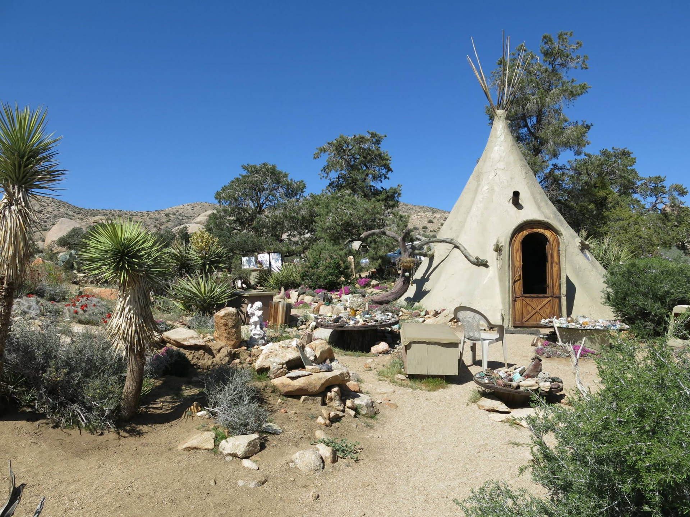
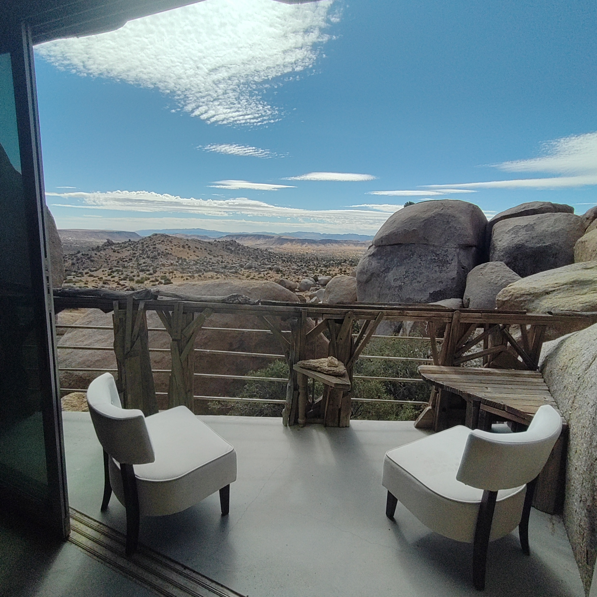
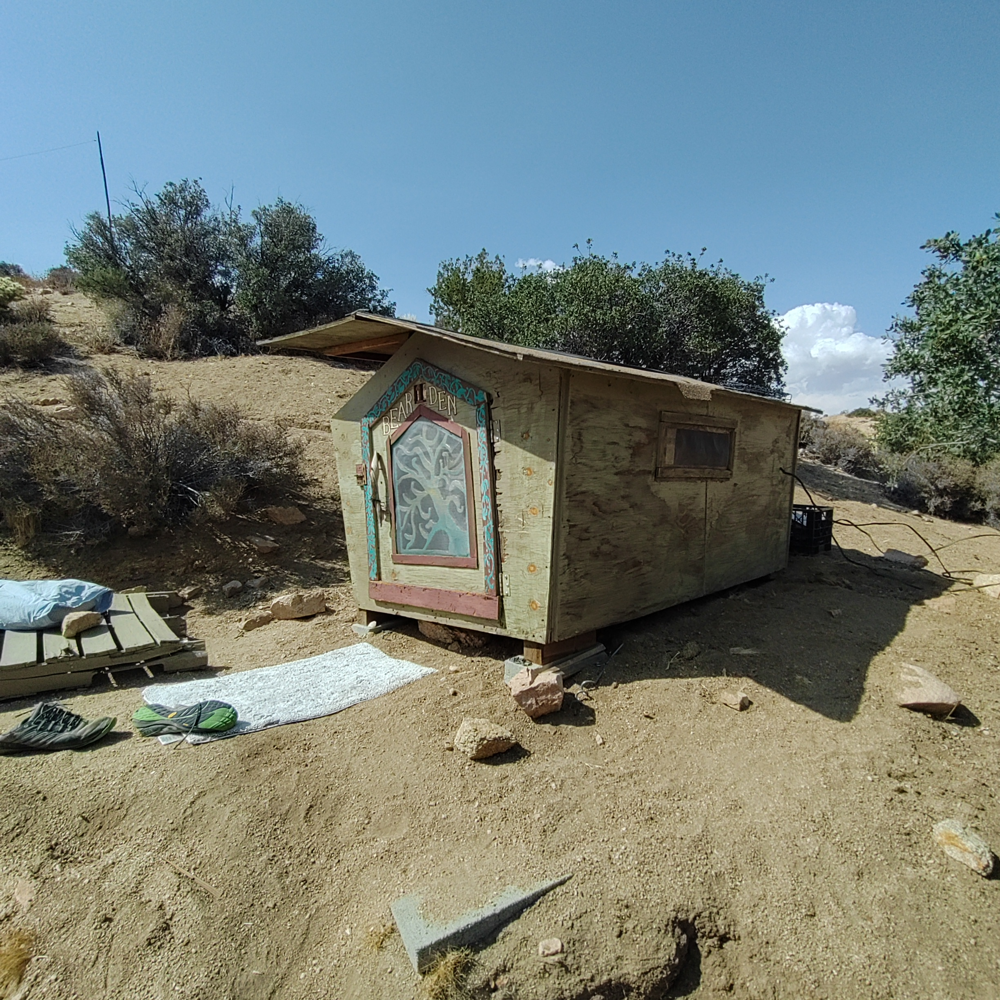

The Place
Rock, distance, and dispersed systems
Boulder Gardens is read through its paths, boulder formations, working spaces, water storage, solar installations, and the long distances between them.
The Sanctuary · The Founder’s Vision
Garth Bowles created Boulder Gardens as a spiritual, off-grid community rooted in simplicity, protection of the desert, and radical welcome.

The Place
Boulder Gardens is read through its paths, boulder formations, working spaces, water storage, solar installations, and the long distances between them.
Daily Record
Photographs and field notes will document ordinary work: repairs, visitors, meals, weather, animal encounters, construction, and movement across the property.
History
Earlier photographs and stories can be added alongside present observations, allowing the archive to recover older chapters without pretending they were recorded in real time.
Future Plates
Site Tour
A photographic route linking the principal spaces.
Community
Portraits and short records made with care and permission.
Infrastructure
The workshop, computers, network, power, and records that meet in one place.
Field Reports

Projects · Boulder House
This is the Boulder House one of only a couple of structures at Boulder Gardens Sanctuary It has a fantastic view across the valley.
Read the full observation →
Projects · Village
This is the bird house I usually sleep in.
Read the full observation →
Land & Ecology · Teepee
I spent 4 nights in one of our border caves, under a huge rock. These talus caves are one of the main features of Boulder Gardens, and they are scattered around everywhere. more information on Talus Caves are here. https://en.wikipedia.org/wiki/Talus_cave
Read the full observation →